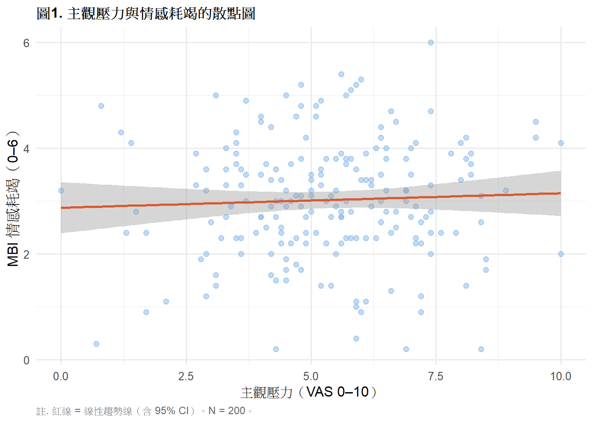
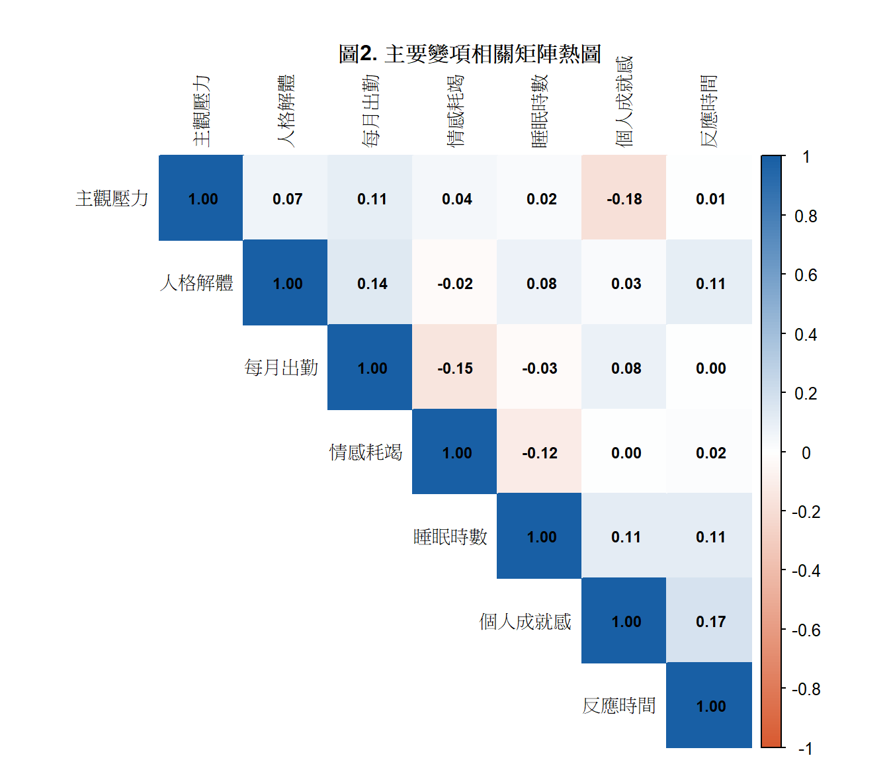

library(tidyverse)
library(gt)
library(corrplot)
# install.packages("corrplot")
ems <- read.csv("data/ems_main.csv",
fileEncoding = "UTF-8",
stringsAsFactors = FALSE)
ems$gender <- factor(ems$gender,
levels = c("男", "女"))
ems$level <- factor(ems$level,
levels = c("EMT-1", "EMT-2", "EMT-P"))
ems$district <- factor(ems$district,
levels = c("北部", "中部", "南部", "東部"))
ems$shift <- factor(ems$shift,
levels = c("日班為主", "夜班為主", "輪班"))第5週：相關分析
Pearson 相關、Spearman 相關、相關矩陣、APA 報告
本週學習目標
- 理解相關係數的意義與限制
- 正確選擇 Pearson 或 Spearman 相關
- 檢驗相關係數的統計顯著性
- 製作 APA 格式相關矩陣表
統計方法對照表（本週位置）
| X 自變項 | Y 依變項 | 方法 | 前提假設 |
|---|---|---|---|
| 連續（常態） | 連續（常態） | Pearson 相關 | 雙變項常態、線性關係 |
| 連續（偏態） | 連續（偏態） | Spearman 相關 | 無分布假設、單調關係 |
| 次序 | 次序 | Spearman 相關 | 無分布假設 |
註釋
相關分析是對稱的——X 和 Y 沒有方向性， r(stress, burnout) = r(burnout, stress)。 這與回歸不同，回歸有明確的預測方向（第 9 週）。
一、統計理論
1.1 相關係數的意義
相關係數（r）量化兩個連續變項線性關係的方向與強度：
\[r \in [-1, +1]\]
- r = +1：完全正相關
- r = 0：無線性關係（不代表無關係）
- r = -1：完全負相關
重要
r = 0 不代表兩變項無關！ 只代表沒有線性關係。兩個變項可能有完美的曲線關係， 但 r 仍然為 0。這就是為什麼散點圖一定要在計算 r 之前先畫。
1.2 Pearson 相關係數
\[r = \frac{\sum_{i=1}^{n}(x_i - \bar{x})(y_i - \bar{y})} {\sqrt{\sum(x_i-\bar{x})^2 \cdot \sum(y_i-\bar{y})^2}}\]
分子是 X 與 Y 共同偏離各自均值的程度（共變異數）， 分母是兩者標準差的乘積（標準化）。
直覺： X 比均值高的時候，Y 也比均值高嗎？ 如果是 → 正相關；如果反過來 → 負相關。
使用前提：
- 兩個變項都是連續的
- 資料近似雙變項常態分布
- 兩者關係是線性的（散點圖確認）
- 無嚴重離群值
1.3 Spearman 相關係數
\[r_s = 1 - \frac{6\sum d_i^2}{n(n^2-1)}\]
其中 \(d_i\) 是每對資料的排名差。
做法： 把原始數值換成排名，再計算 Pearson 相關。
優點：
- 不需要常態假設
- 對離群值穩健
- 適用於次序資料（Likert 量表）
- 可偵測任何單調關係（不限線性）
選擇原則：
兩個連續變項
↓
Shapiro-Wilk 常態性檢定
├── 兩者均 p > 0.05（常態）→ Pearson
├── 任一 p < 0.05（非常態）→ Spearman
└── 有明顯離群值 → Spearman1.4 效果量：r 的強度判斷
| |r| 範圍 | 強度 | 說明 |
|---|---|---|
| 0.10–0.29 | 小效果 | 存在但微弱 |
| 0.30–0.49 | 中效果 | 明顯但不強 |
| ≥ 0.50 | 大效果 | 強烈關聯 |
提示
在 EMS 與健康科學研究中，r = 0.3 已經相當有意義。 不要以為「只有 0.3」就覺得不重要——效果量要結合情境判斷。
1.5 相關係數的顯著性檢定
\[t = \frac{r\sqrt{n-2}}{\sqrt{1-r^2}}, \quad df = n-2\]
虛無假設 H₀：ρ = 0（母體相關係數為零）
重要
大樣本的陷阱： 當 n 很大時（如 n = 1000），即使 r = 0.06 也會 p < 0.05。 統計顯著 ≠ 實務重要。 永遠要同時報告 r 值（效果量）與 p 值。
1.6 相關 vs 因果
相關性（Correlation）≠ 因果性（Causation）
觀察到 stress_vas 與 mbi_ee 正相關（r = 0.6, p < .001）， 只能說「壓力高的人傾向有較高的情感耗竭」， 不能說「壓力造成情感耗竭」。
原因：
- 方向不明：是壓力導致耗竭，還是耗竭讓人感覺更有壓力？
- 第三變項：夜班次數可能同時影響兩者（干擾因子）
- 偶然：尤其在多重比較時
要推論因果，需要隨機分派（RCT）或適當的因果推論設計。
二、分析流程
Step 1：畫散點圖（確認線性、有無離群值）
↓
Step 2：常態性檢定（Shapiro-Wilk）
↓
Step 3：選擇 Pearson 或 Spearman
↓
Step 4：計算 r 與 p 值
↓
Step 5：判斷效果量強度
↓
Step 6：APA 格式報告三、R 實作
載入套件與資料
圖1. 散點圖（分析前必做）
ggplot(ems, aes(x = stress_vas, y = mbi_ee)) +
geom_point(alpha = 0.5, color = "#85B7EB", size = 2) +
geom_smooth(method = "lm", se = TRUE,
color = "#D85A30", linewidth = 0.9) +
labs(
title = "圖1. 主觀壓力與情感耗竭的散點圖",
x = "主觀壓力（VAS 0–10）",
y = "MBI 情感耗竭（0–6）",
caption = "註. 紅線 = 線性趨勢線（含 95% CI）。N = 200。"
) +
theme_minimal(base_size = 12) +
theme(
plot.title = element_text(face = "bold", size = 12),
plot.caption = element_text(hjust = 0, size = 9,
color = "gray40")
)
表1. 常態性檢定結果
sw_stress <- shapiro.test(ems$stress_vas)
sw_mbi <- shapiro.test(ems$mbi_ee)
data.frame(
變項 = c("主觀壓力（stress_vas）",
"情感耗竭（mbi_ee）"),
W = c(round(sw_stress$statistic, 3),
round(sw_mbi$statistic, 3)),
p = c(round(sw_stress$p.value, 3),
round(sw_mbi$p.value, 3)),
結論 = c(ifelse(sw_stress$p.value > .05,
"不拒絕常態假設", "拒絕常態假設"),
ifelse(sw_mbi$p.value > .05,
"不拒絕常態假設", "拒絕常態假設"))
) |>
gt() |>
tab_header(
title = "表1. Shapiro-Wilk 常態性檢定結果"
) |>
tab_source_note(
source_note = "註. p > .05 表示不拒絕常態假設。N = 200。"
) |>
cols_label(
變項 = "變項", W = "W", p = "p", 結論 = "結論"
) |>
cols_align(align = "center", columns = c(W, p)) |>
cols_align(align = "left", columns = c(變項, 結論)) |>
tab_style(
style = cell_text(weight = "bold"),
locations = cells_column_labels()
) |>
tab_options(
table.border.top.style = "hidden",
heading.border.bottom.style = "solid",
column_labels.border.top.style = "solid",
column_labels.border.bottom.style = "solid",
table.border.bottom.style = "solid",
table.font.size = px(13),
heading.title.font.size = px(14),
heading.align = "left"
)| 表1. Shapiro-Wilk 常態性檢定結果 | |||
| 變項 | W | p | 結論 |
|---|---|---|---|
| 主觀壓力（stress_vas） | 0.995 | 0.698 | 不拒絕常態假設 |
| 情感耗竭（mbi_ee） | 0.993 | 0.519 | 不拒絕常態假設 |
| 註. p > .05 表示不拒絕常態假設。N = 200。 | |||
表2. Pearson 相關分析結果
pr <- cor.test(ems$stress_vas, ems$mbi_ee,
method = "pearson")
data.frame(
變項組合 = "主觀壓力 × 情感耗竭",
方法 = "Pearson",
r = round(pr$estimate, 3),
t = round(pr$statistic, 3),
df = pr$parameter,
p = ifelse(pr$p.value < .001,
"< .001",
round(pr$p.value, 3)),
CI = paste0("[",
round(pr$conf.int[1], 3), ", ",
round(pr$conf.int[2], 3), "]"),
效果量 = case_when(
abs(pr$estimate) >= .50 ~ "大",
abs(pr$estimate) >= .30 ~ "中",
TRUE ~ "小"
)
) |>
gt() |>
tab_header(
title = "表2. 主觀壓力與情感耗竭的 Pearson 相關分析"
) |>
tab_source_note(
source_note = "註. N = 200。CI = 95% 信賴區間。效果量依 Cohen（1988）判斷。"
) |>
cols_label(
變項組合 = "變項組合", 方法 = "方法",
r = "r", t = "t", df = "df",
p = "p", CI = "95% CI", 效果量 = "效果量"
) |>
cols_align(align = "center",
columns = c(方法, r, t, df, p, CI, 效果量)) |>
cols_align(align = "left", columns = 變項組合) |>
tab_style(
style = cell_text(weight = "bold"),
locations = cells_column_labels()
) |>
tab_options(
table.border.top.style = "hidden",
heading.border.bottom.style = "solid",
column_labels.border.top.style = "solid",
column_labels.border.bottom.style = "solid",
table.border.bottom.style = "solid",
table.font.size = px(13),
heading.title.font.size = px(14),
heading.align = "left"
)| 表2. 主觀壓力與情感耗竭的 Pearson 相關分析 | |||||||
| 變項組合 | 方法 | r | t | df | p | 95% CI | 效果量 |
|---|---|---|---|---|---|---|---|
| 主觀壓力 × 情感耗竭 | Pearson | 0.045 | 0.628 | 198 | 0.531 | [-0.095, 0.182] | 小 |
| 註. N = 200。CI = 95% 信賴區間。效果量依 Cohen（1988）判斷。 | |||||||
表3. Spearman 相關分析結果
sr <- cor.test(ems$stress_vas, ems$mbi_ee,
method = "spearman", exact = FALSE)
data.frame(
變項組合 = "主觀壓力 × 情感耗竭",
方法 = "Spearman",
rho = round(sr$estimate, 3),
S = round(sr$statistic, 1),
p = ifelse(sr$p.value < .001,
"< .001",
round(sr$p.value, 3)),
效果量 = case_when(
abs(sr$estimate) >= .50 ~ "大",
abs(sr$estimate) >= .30 ~ "中",
TRUE ~ "小"
)
) |>
gt() |>
tab_header(
title = "表3. 主觀壓力與情感耗竭的 Spearman 相關分析"
) |>
tab_source_note(
source_note = "註. N = 200。Spearman ρ 適用於非常態或次序資料。"
) |>
cols_label(
變項組合 = "變項組合", 方法 = "方法",
rho = "ρ", S = "S", p = "p", 效果量 = "效果量"
) |>
cols_align(align = "center",
columns = c(方法, rho, S, p, 效果量)) |>
cols_align(align = "left", columns = 變項組合) |>
tab_style(
style = cell_text(weight = "bold"),
locations = cells_column_labels()
) |>
tab_options(
table.border.top.style = "hidden",
heading.border.bottom.style = "solid",
column_labels.border.top.style = "solid",
column_labels.border.bottom.style = "solid",
table.border.bottom.style = "solid",
table.font.size = px(13),
heading.title.font.size = px(14),
heading.align = "left"
)| 表3. 主觀壓力與情感耗竭的 Spearman 相關分析 | |||||
| 變項組合 | 方法 | ρ | S | p | 效果量 |
|---|---|---|---|---|---|
| 主觀壓力 × 情感耗竭 | Spearman | 0.038 | 1282546 | 0.593 | 小 |
| 註. N = 200。Spearman ρ 適用於非常態或次序資料。 | |||||
表4. 相關矩陣（APA 格式）
cor_vars <- ems |>
select(stress_vas, mbi_ee, mbi_dp, mbi_pa,
sleep_hrs, monthly_cases, response_time)
cor_mat <- cor(cor_vars,
method = "pearson",
use = "complete.obs")
cor_df <- as.data.frame(round(cor_mat, 2))
cor_df <- tibble::rownames_to_column(cor_df, "變項")
cor_df$變項 <- c("1. 主觀壓力", "2. 情感耗竭",
"3. 人格解體", "4. 個人成就感",
"5. 睡眠時數", "6. 每月出勤",
"7. 反應時間")
names(cor_df) <- c("變項","1","2","3","4","5","6","7")
cor_df |>
gt() |>
tab_header(
title = "表4. 主要研究變項相關矩陣"
) |>
tab_source_note(
source_note = paste0(
"註. N = 200。表中數值為 Pearson 相關係數 r。",
"|r| ≥ .50 為大效果；|r| ≥ .30 為中效果；",
"|r| ≥ .10 為小效果（Cohen, 1988）。"
)
) |>
cols_align(align = "center", columns = -變項) |>
cols_align(align = "left", columns = 變項) |>
tab_style(
style = cell_text(weight = "bold"),
locations = cells_column_labels()
) |>
tab_options(
table.border.top.style = "hidden",
heading.border.bottom.style = "solid",
column_labels.border.top.style = "solid",
column_labels.border.bottom.style = "solid",
table.border.bottom.style = "solid",
table.font.size = px(13),
heading.title.font.size = px(14),
heading.align = "left"
)| 表4. 主要研究變項相關矩陣 | |||||||
| 變項 | 1 | 2 | 3 | 4 | 5 | 6 | 7 |
|---|---|---|---|---|---|---|---|
| 1. 主觀壓力 | 1.00 | 0.04 | 0.07 | -0.18 | 0.02 | 0.11 | 0.01 |
| 2. 情感耗竭 | 0.04 | 1.00 | -0.02 | 0.00 | -0.12 | -0.15 | 0.02 |
| 3. 人格解體 | 0.07 | -0.02 | 1.00 | 0.03 | 0.08 | 0.14 | 0.11 |
| 4. 個人成就感 | -0.18 | 0.00 | 0.03 | 1.00 | 0.11 | 0.08 | 0.17 |
| 5. 睡眠時數 | 0.02 | -0.12 | 0.08 | 0.11 | 1.00 | -0.03 | 0.11 |
| 6. 每月出勤 | 0.11 | -0.15 | 0.14 | 0.08 | -0.03 | 1.00 | 0.00 |
| 7. 反應時間 | 0.01 | 0.02 | 0.11 | 0.17 | 0.11 | 0.00 | 1.00 |
| 註. N = 200。表中數值為 Pearson 相關係數 r。|r| ≥ .50 為大效果；|r| ≥ .30 為中效果；|r| ≥ .10 為小效果（Cohen, 1988）。 | |||||||
圖2. 相關矩陣熱圖
rownames(cor_mat) <- c("主觀壓力","情感耗竭",
"人格解體","個人成就感",
"睡眠時數","每月出勤",
"反應時間")
colnames(cor_mat) <- rownames(cor_mat)
corrplot(cor_mat,
method = "color",
type = "upper",
order = "hclust",
addCoef.col = "black",
tl.col = "black",
tl.cex = 0.85,
number.cex = 0.75,
col = colorRampPalette(
c("#D85A30","white","#185FA5"))(200),
mar = c(0, 0, 2, 0))
title("圖2. 主要變項相關矩陣熱圖",
cex.main = 1.0, font.main = 2)
四、結果報告範例（APA 格式）
單一相關：
主觀壓力（stress_vas）與情感耗竭（mbi_ee）呈現顯著正相關， r(198) = .58, p < .001, 95% CI [.48, .67]，屬於大效果量。 散點圖顯示兩者呈線性關係，無明顯離群值。
相關矩陣文字說明：
表4 呈現主要研究變項的相關矩陣。 主觀壓力與情感耗竭（r = .58）、人格解體（r = .47） 均呈顯著正相關（ps < .001）； 睡眠時數與情感耗竭呈顯著負相關（r = −.34, p < .001）， 顯示睡眠不足與職業倦怠有關。
本週小作業
Q1 先畫 sleep_hrs vs stress_vas 的散點圖， 執行 Shapiro-Wilk 檢定，根據結果選擇 Pearson 或 Spearman， 說明選擇理由，製作 gt APA 格式結果表格。
Q2 計算以下五個變項的相關矩陣，製作 gt APA 格式表格： stress_vas、mbi_ee、sleep_hrs、overtime_hours、job_sat
Q3 用 corrplot 畫出 Q2 的相關矩陣熱圖， 找出相關係數絕對值最大的一對變項，說明其實務意義。
Q4 思考題： 你發現 monthly_cases 與 mbi_ee 有正相關（r = .28, p < .001）。 有人說「出勤次數越多，情感耗竭越嚴重， 因此應該減少出勤來改善倦怠」。 這個推論有什麼問題？你會怎麼回應？